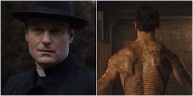
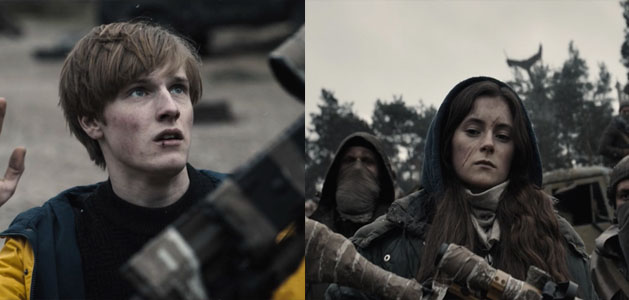

¿Quién es Noah?
En internet hay una versión de los hechos que deja los cabos de Noah muy bien atados. Según esta, Noah es el hijo fruto de la relación extramatrimonial entre Tronte (el padre de Ulrich) y Claudia (gerente de la planta nuclear en 1986 y madre de Regina). En su día tuvieron un lío, y lo sabemos porque hay una escena de 1986 en la que se ve una clara tensión entre ambos, que se rozan la mano de manera insinuadora. Además, sabemos seguro que Tronte le fue infiel a su mujer, ya que Jana (la madre de Ulrich) le confiesa a su hijo (Ulrich) que su padre (Tronte) no estaba en casa cuando sucedió la desaparición de Maddy (hermano menor de Ulrich), y que estaba con su amante (de la que no desvela la identidad), y que no era la primera vez que la engañaba. Suponemos que, en ese momento, Tronte estaba con Claudia.
Entonces, como en la época estaba muy mal visto tener un hijo fuera del matrimonio, y ni Claudia ni Tronte querían que eso repercutiera a su imagen profesional y social ni destrozar sus familias, decidieron esconder a Noah en el búnker en el que están todos los niños secuestrados. Allí se crío “el pobre”, y por eso está decorada como una habitación infantil de los ochenta-noventa. Es por este motivo por el que Noah odiará enfermizamente a sus padres.
Dicho esto, cuando Maddy viaja en el tiempo hasta el búnker, Noah viaja también a 1920, 33 años antes del 1953. Y este dato lo tenemos porque Agnes Nielsen, la madre de Tronte, en 1953, dice que estuvo casada 15 años con un pastor, y que se alejó de él porque era una mala persona. La cosa es que, cuando Noah llegó a 1920, era suficientemente mayor para comprender que lo que había pasado es que había viajado en el tiempo, pero todavía era menor de edad, así que pasó a vivir en un orfanato (que en esa época lo más seguro es que fuese religioso). A partir de allí, creció y tuvo un hijo con Agnes; Tronte (su propio padre). Noah es malo con él; lo maltrata, y estas acciones no son nada más que pura venganza, castigos que Noah infringe a Tronte por algo que todavía no ha hecho, pero que hará.
El futuro en el que aparece Jonas
En las últimas escenas de la temporada, vemos que Jonas (adolescente) está encerrado en la habitación del búnker de 1986 y que, al aparecer un agujero en la pared y ver al Helge de 1953, ambos se tocan la yema de los dedos y ese contacto manda a Jonas a la misma cueva pero en un futuro indefinido. Sabemos que es futuro porque Jonas se encuentra con una gente, vestida con ropas grises y andrajosas, que le dicen “bienvenido al futuro”.
Pues bien, esta última escena que tantas posibilidades abre en la historia de “Estrenos” tiene algunas explicaciones teóricas. Una de ellas dice que, al tocarse Helge y Jonas e ir este último al futuro, se demuestra que los sucesos pueden cambiar y que no todo está escrito y forma parte de un círculo del que no se puede salir. Pero a mí esto me parece una afirmación sin fundamento, porque ese suceso podía también estar escrito, y por que me parece más creíble la teoría de que, con ese contacto, el Helge de 1953 viajó dondequiera que estuviera Noah, haciendo que este lo acogiera como ayudante en su misión de controlar los viajes en el tiempo y matar a niños para conseguirlo.
Hay gente que, siguiendo la línea de la teoría en la que el contacto entre Helge y Jonas rompe el círculo temporal, asegura que el futuro en el que aparece Jonas es el mismo 2019, alterado por el contacto entre estos. De nuevo, encuentro esto más bien poco plausible. Por otro lado, hay otros que afirman que ese futuro es, si respetamos la regla de los 33 años, el 2052. Ahora bien, como el viaje se hizo a través de una fractura y no de la cueva, podría ser, en realidad, cualquier año. ¿Es quizás esa fractura lo que realmente perseguía Noah? ¿La posibilidad de poder ir a cualquier época sin necesidad de seguir la regla de los 33 años? Esto ya es especulación mía.
¿Por qué Jonas aparece (cuando viaja a ese futuro) en una cueva llena de fotografías de las familias y los líos temporales? Porque, según las especulaciones, seguramente Jonas llegara a la cueva en la que en ese momento vive Claudia, que también está enterada de todo el tema de los viajes temporales. Es entonces cuando Claudia reclutará a Jonas, que se convertirá en el que al principio llamábamos “el extraño”. Pero ¿por qué el futuro es un futuro postapocalíptico? ¿Tiene algo que ver con el problema de los residuos tóxicos de la planta nuclear? Dudillas
Michael realmente no murió

Aunque, en los primeros episodios, vimos con bastante claridad que Michael (o Mikkel) se suicidaba dejando esa famosa carta que llegaría tanto a manos de Ines como de Jonas, hay cosas sobre esta muerte que no cuadran. Por ejemplo ¿por qué, cuando Michael se le aparece a su hijo Jonas, esta lleno de una especie de barro negro, si él se suicido “limpiamente” ahorcándose? Quizás esto tenga un significado oculto que no tiene sentido ni para el propio Jonas, o quizás sea la prueba de que hay algo más relacionado con Michael.
Además, hay una imagen, que ha creado una teoría loca: la de que Michael no murió ahorcado, sino que, cuando se suicidó, viajó a 1953 y se convirtió en Bernd Doppler, fundó la planta nuclear y tuvo a Helge de hijo. ¿Por qué la gente dice esto? Por que, en una escena en la que aparece Bernd Doppler, este cojea y, la última vez que vemos a Mikkel (una vez ya ha viajado a 1986 y se está recuperando en el hospital con Ines) cojea de la misma pierna.
¿Qué sentido tiene que Michael, en vez de intentar arreglar el tema de los secuestros y los viajes, funde una planta nuclear y tenga a Helge? Ninguno, pero soñar es gratis.